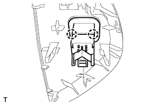

AIRBAG CUT-OFF SWITCH > REMOVAL |
| 1. DISCONNECT CABLE FROM NEGATIVE BATTERY TERMINAL |
| 2. REMOVE INSTRUMENT SIDE PANEL RH |
 |
Place protective tape as shown in the illustration.
Using a moulding remover, detach the 6 claws.
Remove the side panel and disconnect the connector.
| 3. REMOVE AIRBAG CUT-OFF SWITCH |
 |
Detach the 2 claws and remove the airbag cut-off switch.